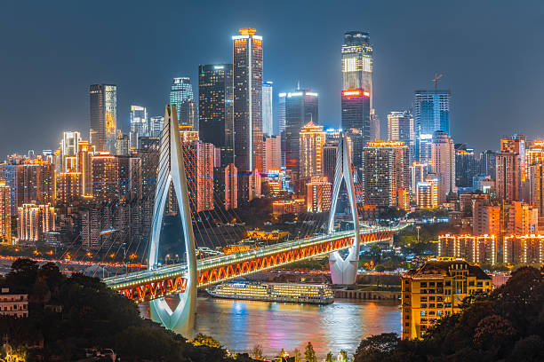
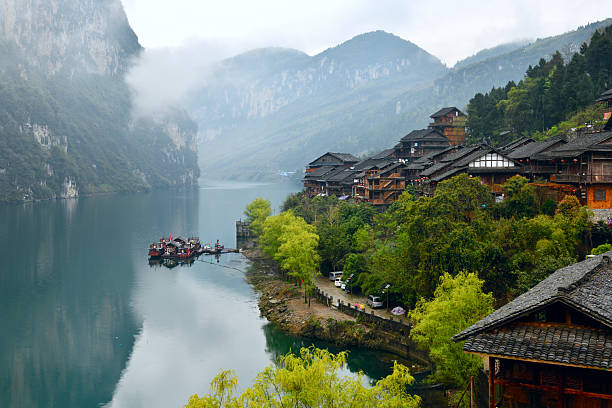

Ciqikou Ancient Town
Ciqikou preserves the atmosphere of a traditional riverside trading settlement. Visitors can explore narrow lanes, local shops, tea houses, and traditional snacks.
Ciqikou preserves the atmosphere of a traditional riverside trading settlement. Visitors can explore narrow lanes, local shops, tea houses, and traditional snacks.

Steep hillsides, stairways, bridges, and layered streets reflect how residents adapted the built environment to Chongqing's challenging terrain.

The wider Yangtze region around Chongqing is associated with dramatic gorges, river transport, and centuries of cultural and economic exchange.
Local food traditions, folk performances, tea culture, and seasonal celebrations continue to connect residents with the region's cultural identity.
Chongqing's position along major rivers helped make it an important center for commerce and transportation. It also served as China's wartime capital during part of the Second Sino-Japanese War. Its heritage combines ancient regional traditions with more recent national history.